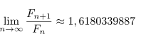
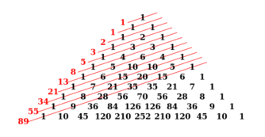

Podstawowe informacje
Ciąg Fibonacciego jest zdefiniowany w następujący sposób:
F1 = 1,
F2 = 1,
Fi = Fi-1 + Fi-2, i > 2
F: 1, 1, 2, 3, 5, 8, 13, 21, 34, 55, 89, 144,...
Złota liczba
Granica ciągu:

Czyli dzieląc każdą kolejną liczbę Fibonacciego przez poprzednią otrzymujemy złotą proporcję.
Związek z trójkątem Pascala

Obrazek ze strony https://beder.pl/java/firecode-io/better-fibonacci/.
Sumy kwadratów kolejnych liczb Fibonacciego
Co się stanie, gdy podniesiemy do kwadratu kolejne elementy ciągu?
F: 1, 1, 2, 3, 5, 8, 13, 21
F2: 1, 1, 4, 9, 25, 64, 169
Okazuje się, że zachodzi ciekawa zależność:
F21 + F22 = F3
F22 + F23 = F5
F23 + F24 = F7
Następnie dodając więcej kolejnych wyrazów otrzymujemy:
1 + 1 + 4 = 6 = 2 x 3
1 + 1 + 4 + 9 = 15 = 3 x 5
1 + 1 + 4 + 9 + 25 = 40 = 5 x 8
1 + 1 + 4 + 9 + 25 + 64 = 104 = 8 x 13
...
Wytłumaczenie: